사용자 가이드
DN.GG로
경기를 기록하세요
농구 경기 기록·선수 통계·랭킹을 한 곳에서 관리합니다.
1
로그인 / 회원가입
/settings
상단 메뉴의 를 탭합니다. 경기 생성·기록 입력·선수 관리 등 쓰기 기능은 모두 로그인이 필요합니다.
로그인 전
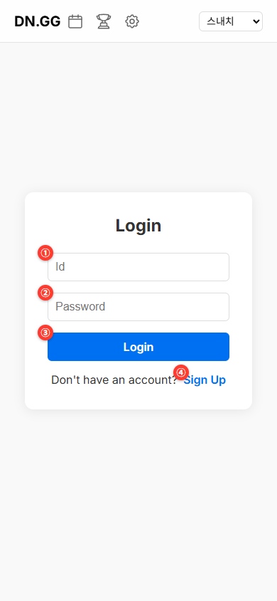
① ID | ② 비밀번호 | ③ Login | ④ Sign Up
로그인 후
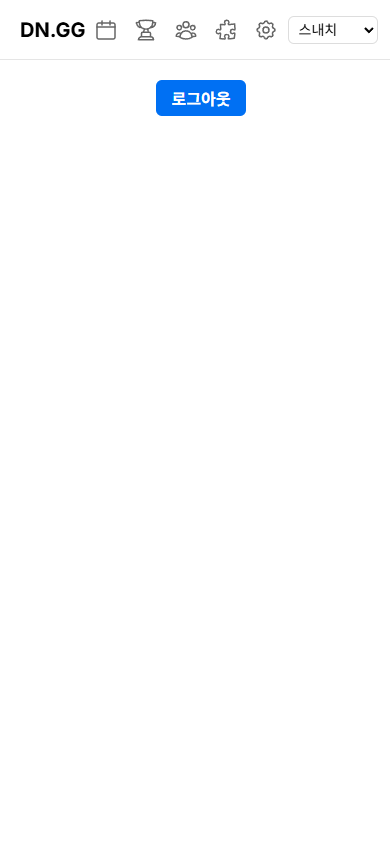
로그인 성공 — 로그아웃 버튼만 표시됩니다.
1
① 아이디와 ② 비밀번호를 입력합니다.
2
③ 로그인 버튼을 탭합니다.
3
계정이 없으면 ④ 회원가입으로 계정을 만든 후 로그인합니다.
와 탭은 로그인 전에는 🔒 자물쇠로 표시되며, 로그인하고 내 소속 그룹을 선택하면 잠금이 풀립니다.
| 탭 | 로그인 전 | 로그인 후 |
|---|---|---|
| ✅ 볼 수 있음 | ✅ 볼 수 있음 | |
| ✅ 볼 수 있음 | ✅ 볼 수 있음 | |
| ✅ 볼 수 있음 | ✅ 볼 수 있음 | |
| 🔒 잠김 (누르면 로그인 안내) | ✅ 이용 가능 | |
| 🔒 잠김 (누르면 로그인 안내) | ✅ 이용 가능 |
2
그룹 선택
앱에 접속하면 오른쪽 상단 드롭다운에서 내 그룹을 선택합니다. 그룹을 선택해야 경기 기록, 랭킹 등 모든 데이터가 표시됩니다.
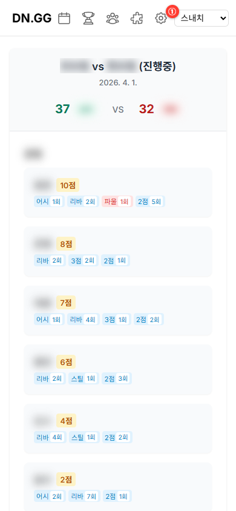
① 오른쪽 상단 그룹 선택 드롭다운
그룹을 선택하지 않으면 데이터가 표시되지 않습니다. 항상 먼저 선택하세요.
3
팀·선수 관리
/teams
🔒 로그인 필요
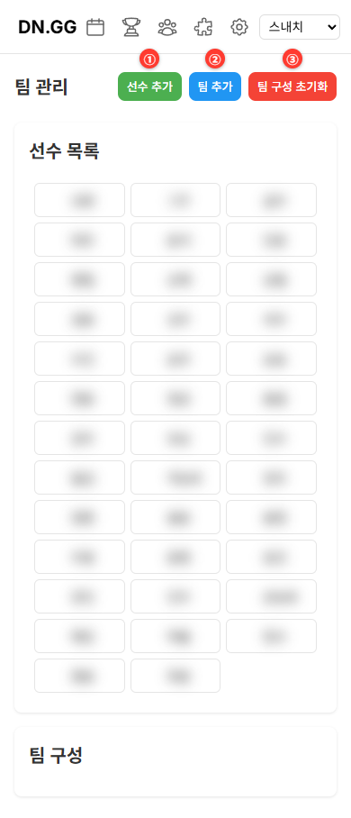
① 선수 추가 | ② 팀 추가 | ③ 팀 구성 초기화
선수 추가하기
1
① 선수 추가 버튼을 탭합니다.
2
이름(필수)과 등번호(선택)를 입력하고 저장합니다.
팀 만들기
1
② 팀 추가 버튼을 탭하고 팀 이름을 입력합니다.
2
선수 목록에서 선수를 탭하면 해당 팀에 배정됩니다.
3
처음부터 다시 구성하려면 ③ 팀 구성 초기화를 탭합니다.
경기를 만들기 전에 팀 구성을 먼저 완료하세요. 팀이 없으면 경기를 생성할 수 없습니다.
4
경기 만들기
/games
🔒 로그인 필요
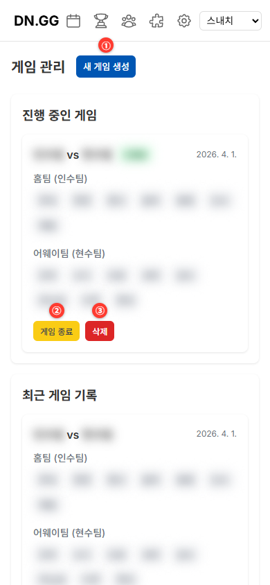
① 새 게임 생성 | ② 게임 종료 | ③ 삭제
새 경기 만들기
1
① 새 게임 생성 버튼을 탭합니다.
2
① Home팀과 ② Away팀을 각각 선택합니다.
3
③ 생성을 누르면 경기가 시작됩니다.
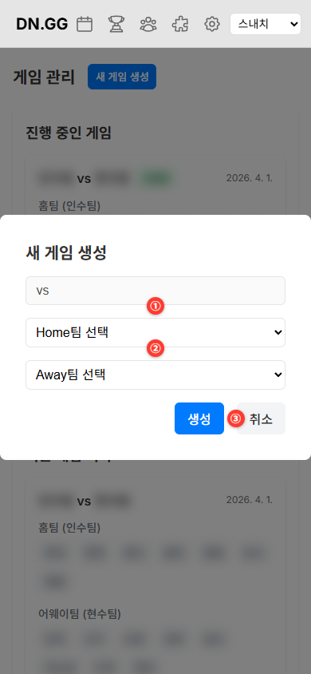
① Home팀 | ② Away팀 | ③ 생성 | ④ 취소
| 버튼 | 설명 |
|---|---|
| 경기 카드 탭 | 실시간 기록 화면으로 이동 |
| 게임 종료 | 경기를 완료 처리합니다 |
| 다시 진행하기 | 완료된 경기를 다시 진행 중으로 되돌립니다 |
| 삭제 | 경기를 영구 삭제합니다 (확인창 표시) |
5
실시간 경기 기록
/record/[id]
🔒 로그인 필요
진행 중인 경기 카드를 탭하면 기록 화면으로 이동합니다.
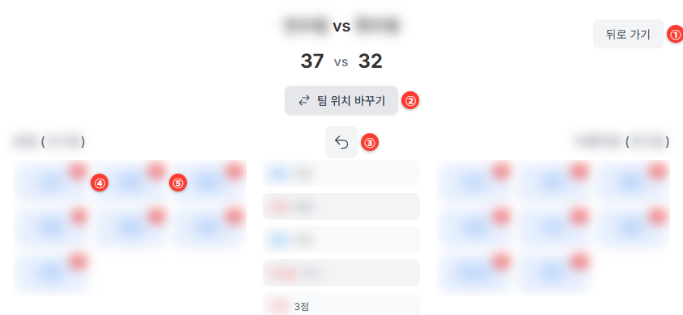
① 뒤로 가기 | ② 팀 위치 바꾸기 | ③ 되돌리기 | ④⑤ 선수 버튼
기록 입력 방법
1
왼쪽(홈팀) 또는 오른쪽(어웨이팀)에서 선수 버튼을 탭합니다.
2
팝업에서 기록 항목을 선택합니다 (2점, 3점, 어시, 리바운드 등).
3
중앙 피드에 기록이 추가되고 점수가 자동 계산됩니다.
4
잘못 입력했으면 ③ 되돌리기(아이콘 버튼)로 취소합니다.
| 버튼 | 설명 |
|---|---|
| ① 뒤로 가기 | 경기 목록으로 돌아갑니다 |
| ② 팀 위치 바꾸기 | 홈팀·어웨이팀 좌우 위치를 전환합니다 |
| ③ 되돌리기 | 직전 기록 1건을 취소합니다 |
| 선수 버튼 숫자 | 해당 선수의 현재 개인 득점입니다 |
6
일일 기록
/daily
상단 메뉴의 를 탭합니다. 특정 날짜에 진행된 모든 경기의 선수별 스탯 합계를 확인합니다.
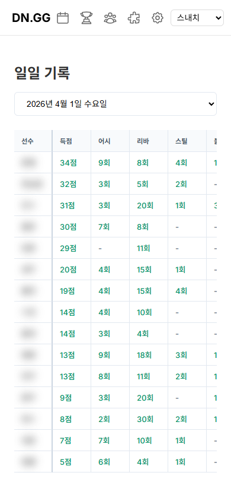
① 날짜 선택 드롭다운 — 날짜를 바꾸면 해당 날짜 데이터로 즉시 갱신됩니다.
7
랭킹
/rankings
상단 메뉴의 를 탭합니다. 득점·어시·리바 등 카테고리별 상위 3명을 확인합니다.
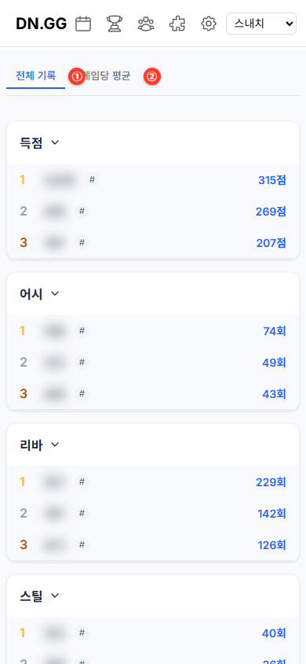
① 전체 기록 탭 | ② 게임당 평균 탭
| 탭 | 설명 |
|---|---|
| ① 전체 기록 | 시즌 누적 합산 순위 |
| ② 게임당 평균 | 경기당 평균 순위 (소수점 1자리) |
홈
홈 — 경기 요약
/
그룹을 선택하면 홈 화면에 지금까지 진행한 경기 목록이 최신순으로 표시됩니다.
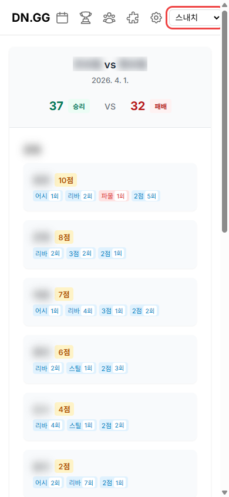
각 경기 카드에서 날짜, 팀명, 최종 점수, 선수별 스탯을 확인합니다.
| 요소 | 설명 |
|---|---|
| 경기 카드 | 날짜, 팀명, 최종 점수(승·패·무) 표시 |
| 선수 이름 탭 | 해당 선수의 전체 기록 페이지로 이동 |
| (진행중) | 아직 종료되지 않은 경기에 표시됨 |
+
선수 기록 조회
/player/[id]
홈 화면에서 선수 이름을 탭하면 해당 선수의 전체 기록 페이지로 이동합니다.
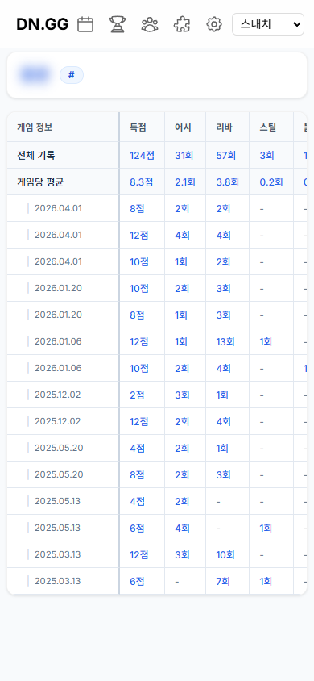
전체 기록·게임당 평균·경기별 스탯을 한눈에 확인합니다.
✓
빠른 시작 체크리스트
처음 사용하는 경우 이 순서대로 따라하세요
에서 로그인 (또는 회원가입)
오른쪽 상단에서 그룹 선택
에서 선수 추가 & 팀 구성
에서 새 게임 생성
경기 카드 탭 → 실시간 기록 입력
경기 종료 후 ·에서 통계 확인